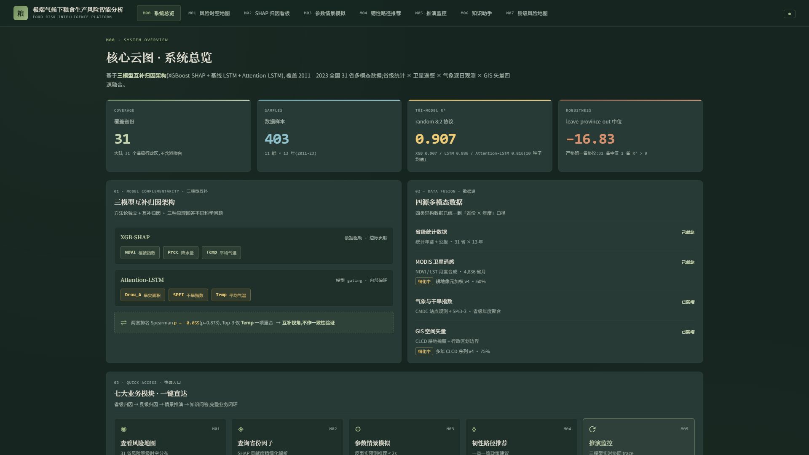
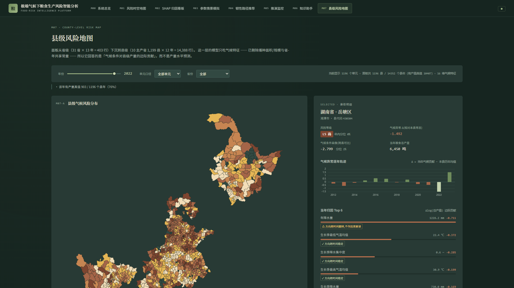

学科背景。 极端气候已成为粮食安全的核心扰动源。2023 年全国平均气温创 1961 年以来新高，京津冀"23·7"极端暴雨致河北平原约 24 万公顷农田受灾，长江中下游高温干旱与西南"旱涝急转"叠加发生。在农学与农业气象学的学科视野中，这类事件提出的核心科学问题不是"某年减产多少"，而是在省级尺度上，哪些因子对粮食生产风险的边际贡献更大、方向如何、区域间是否分化——这是区域农业风险评估、种植结构调整与防灾减灾政策制定的共同前提。
学科建设意义。 长期以来，该问题的研究路径存在明显的学科割裂：农学与农业气象学擅长机理阐释但受限于统计手段，计算机科学擅长建模但常脱离农学语境。本作品以农业气象学的问题定义 + 机器学习的方法工具 + 决策科学的输出形式构建跨学科链条，为"人工智能赋能农学理论研究与科研探索"提供一条可复用的路径：把卫星观测、地面气象与统计年鉴三类异构数据在省级面板上对齐，用可解释模型输出农学可解读的因子排序，最终交付到科研与管理部门可直接使用的工具。
| 目标层级 | 具体目标 | 达成指标 |
|---|---|---|
| 数据层 | 构建统计 + 气象 + 遥感 + 致灾/空间四模态的两级面板数据集（省级 + 县级） | 省级 31 省 × 13 年（2011—2023）= 403 样本 × 11 维；县级 10 主产省 1,199 县 × 12 年 = 14,388 样本 × 16 维气候特征；两级均无缺失 |
| 方法层 | 建立跨算法归因互补的分析框架，并公开报告多协议验证结果 | 三模型互补归因；random 8:2 / leave-year-out / leave-province-out 三协议并行披露 |
| 学科层 | 输出农学可解读的因子相对重要性排序与区域分化证据，并把"空间粒度"本身当作可检验的变量 | SHAP 边际贡献 Top-3、Attention gating Top-3 双视角对照；省级与县级两级归因；省级→县级的粒度递进实验与规模混淆控制 |
| 应用层 | 交付面向科研人员与管理部门的可视化决策支持系统 | 8 模块 Web 系统，单次推理实测均值 0.39 秒，全栈无 GPU 依赖 |
本作品服务的学科领域为农学门类下的作物学与农业资源与环境（区域粮食安全风险评估方向），并交叉农业气象学与计算机科学与技术。所聚焦的核心学科环节为：
之所以选择"科研数据处理与可视化"作为切入环节，是因为该环节的痛点跨学科共性最强：它同时制约农学研究的可复现性与计算机方法在农学中的落地效率。
| 环节 | 现状痛点 | 后果 |
|---|---|---|
| 数据准备 | 四类数据源格式、时空粒度、坐标系各不相同（栅格 / 站点 / 年鉴 / 矢量），对齐工作重复且不可复用 | 单次研究的数据准备耗时占全流程主要比例；不同研究口径不一致，结论难以横向比较 |
| 建模归因 | 多依赖单一模型与全局重要性排序，缺乏跨原理模型的归因对照，也缺乏对模型适用边界的主动披露 | 归因结论的稳健性无法被同行检验；易出现"把拟合能力误读为因果结论" |
| 成果转化 | 研究多止步于论文与离线脚本，缺少面向非技术用户的交互工具 | 归因结论难以触达农技推广与政策制定环节 |
| 需求 | AI 技术的对应角色 |
|---|---|
| 异构数据时空对齐与标准化 | 缺失值插值、Z-score 标准化、栅格按省域行政边界的加权聚合（遥感含耕地像元权重） |
| 非线性、多因子耦合的风险归因 | 梯度提升树（捕捉非线性与交互）+ SHAP 归因框架 |
| 时序维度的独立对照视角 | LSTM 与特征级注意力门控（feature-level attention gating） |
| 归因结论的可检验性 | 多协议交叉验证框架 + 消融实验（ablation） |
| 结论触达非技术用户 | Web 决策支持系统 + 检索增强问答（把方法论文档作为知识库） |
系统采用"数据层 — 算法层 — 应用层"三层架构：
| 层次 | 组成 | 输出 |
|---|---|---|
| 数据层 | 省级：统计（产量与投入）、气象（气温/降水/日照/SPEI）、遥感（MODIS NDVI 与地表温度，按耕地像元加权）、致灾与空间（旱灾/水灾面积、省域矢量）；县级：县域统计年鉴、TerraClimate 4.6 km 气候格网、SPEIbase 0.5°、县级行政区划 | 缺失值插值 → 时空对齐 → Z-score → 省级 403 × 27 面板；县级 14,388 × 36（其中 16 维气候特征入模） |
| 算法层 | XGBoost-SHAP（横截面边际贡献）、LSTM（时序拟合参照）、Attention-LSTM（11 维 gating 权重）、三协议交叉验证、消融实验 | 模型文件 + 归因结果 + 鲁棒性报告 |
| 应用层 | REST API（推理与归因）+ Web 前端 8 模块 | 可视化决策支持系统 |
| 层次 | 选型 | 与学科需求的适配理由 |
|---|---|---|
| 前端 | Vue 3 + ECharts | 科研人员需要"可交互探索"，而非静态图表；ECharts 地图组件适配省域展示 |
| 后端 | Flask 3 + gunicorn | 轻量、易部署到教学/科研服务器；无需 GPU |
| 预测模型 | XGBoost | 省级小样本（N = 403）与县级中样本（14,388）两级面板上均为最优或主引擎；特征中维、非线性与交互显著，树模型是最适配的选择 |
| 归因 | SHAP | 提供样本级可加性分解，满足"农学可解读"要求（作用方向 + 单省归因 + 交互依赖） |
| 时序对照 | LSTM + 特征级注意力门控 | 省级年度面板 TIMESTEPS = 1，传统时间步注意力退化，故适配为特征级软选择门控 |
| 统计校核 | 线性混合效应模型 | 用方差分解定量回答"R² 究竟来自哪里"，避免过度解读 |
| 知识助手 | BGE-M3 嵌入 + BM25 混合检索 + 交叉编码器重排 + 大模型生成 | 让方法论文档可直接被自然语言检索，降低科研新人上手成本 |
为什么强调"选型依据"而不是"越前沿越好"：N = 403 的省级面板数据规模决定了深度模型的收益上限；把面板下沉到县级、样本扩到 14,388 之后，实测仍然没有改变这一取舍（XGBoost 仍是主引擎，LSTM 类模型在同一口径下表现明显更弱）。本项目因此选择用多个原理不同的轻量模型做归因对照，而非堆叠一个大模型。
（续）县级面板与特征口径。 县级层把同一套"对齐—聚合—入模"流程下沉一级：
log(总产量) 的方差约 92% 由播种面积解释，若把规模放进特征，会把"规模解释规模"记成气候解释力。该约定由对照实验验证，见 §六.2（2.1）。目标函数同时考虑训练损失与树结构正则项：
Obj = Σ L(y_i, ŷ_i) + Σ Ω(f_k)， ŷ_i = Σ f_k(x_i)
SHAP 将单样本预测分解为各特征贡献之和：
ŷ_i = φ_0 + Σ φ_ij
输出三个层次的归因：全局重要性（mean |SHAP|）、单样本瀑布分解、特征交互依赖。
针对 TIMESTEPS = 1 的省级年度面板特性，将时间步注意力改造为特征级注意力门控：
e_j = vᵀ tanh(W_h x_j + b_h)
α_j = exp(e_j) / Σ_k exp(e_k)
x'_j = α_j · x_j
α 满足 Σα = 1，因此可与 SHAP 排名直接做等级相关对照——这是"互补归因"可比性的技术前提。
| 协议 | 检验目标 | 实测（XGBoost，10 种子 / 31 折 / 13 折） |
|---|---|---|
| random 8:2 | 已见省份相邻样本的拟合与省内归因能力 | R² = 0.907 ± 0.038，RMSE 312.5 kg/ha |
| leave-year-out | 时间外推（已见省份的未来年份） | R² = 0.894 ± 0.10 |
| leave-province-out | 空间外推（未见省份） | 中位 R² = −16.83，31 省仅 1 省 > 0 |
配套消融：移除 NDVI 后 R² 由 0.907 → 0.904（损失 0.003），据此拒绝"NDVI 是整体精度核心驱动"的表述；目标变量对照实验（去趋势残差目标 R² = −0.10 ± 0.28）作为方法学诚信记录一并保留。
用 y_it = α_i + β X_it + ε_it 做方差分解：ICC = 0.9710（95% CI [0.9496, 0.9805]），即约 97% 的总方差由省份基线差异贡献；LRT 对比混合效应与混合 OLS：LR = 741.59，p ≈ 1.35×10⁻¹⁶³。11 维固定效应中 4 项显著（机械化率、化肥投入、旱灾面积、水灾面积），NDVI 的 β 不显著（p = 0.570）。
本模块的学科价值：它把"机器学习给了一个高分"翻译成农学与统计学都能接受的结论——R² = 0.907 测的是省内因子相对重要性识别能力，不是跨省气候-产量映射能力。这一自我校核是本作品与常见"刷榜式"AI 应用最本质的区别。
| 模块 | 功能 | 面向的学科环节 |
|---|---|---|
| M00 系统总览 | 全局指标、数据覆盖、模型卡片入口 | 科研入门 |
| M01 风险时空地图 | 31 省 × 13 年风险等级地图 + 时间轴 + 省级历史曲线 | 区域分化规律探索 |
| M02 SHAP 归因看板 | 全局重要性 + 单省瀑布分解 + 蜂群图 + 交互依赖 | 因子归因分析 |
| M03 参数情景模拟 | 调节灌溉率/化肥/降水等因子做反事实推演 | "如果…会怎样"的科研假设检验 |
| M04 韧性路径推荐 | 12 条白箱规则引擎 × 三阶段（0-1 / 1-3 / 3-5 年）输出省级差异化路径 | 结论向对策转化 |
| M05 推演监控 | 推理链路与响应状态可视化 | 可复现性与审计 |
| M06 知识助手 | 面向方法论文档的检索增强问答 | 科研新人上手 |
| M07 县级风险地图 | 10 主产省 1,199 县的逐年气候归因地图 + 单县偏离轨迹 + 空间粒度递进体检屏 | 跨尺度归因对比与粒度递进证据呈现 |
| 项 | 说明 |
|---|---|
| 服务器 | 单台通用云主机（中等配置）即可承载，无 GPU 成本 |
| 数据 | 全部采用公开权威数据源（统计年鉴、气象数据网、MODIS、水旱灾害公报等），无采购成本 |
| 运维 | 单体服务 + 静态前端，无微服务集群与专用中间件 |
| 推广边际成本 | 新增一个省份或一个作物品种，只需补数据重新训练，系统无需改动 |
| 阶段 | 主要任务 | 产物 |
|---|---|---|
| 阶段一 · 数据底座 | 多源数据采集、耕地像元加权聚合、时空对齐、质量审计 | 403 × 27 面板数据集 + 数据说明文档 |
| 阶段二 · 建模与归因 | 三模型训练、SHAP 归因、注意力门控、混合效应校核 | 模型文件 + 模型卡片（含完整超参与评价） |
| 阶段三 · 鲁棒性验证 | 三协议交叉验证、NDVI 消融、目标变量对照 | 鲁棒性报告（含负结果公开披露） |
| 阶段四 · 系统开发 | API 化、前端 8 模块、安全与无障碍加固 | Web 决策支持系统 + 部署脚本 |
| 阶段五 · 验证与固化 | 真值单点校验、性能实测、文档齐备化 | 测试报告 + 操作手册 + 演示视频 |
团队 3 人，按"算法—系统—材料"三条线分工，交叉复核：
| 角色 | 职责 | 与学科环节的对应 |
|---|---|---|
| 队长（算法与统筹） | 建模、归因分析、鲁棒性验证、整体统筹 | 对接农学问题定义 |
| 队员 A（系统与部署） | 数据管线、后端 API、前端集成、部署运维 | 对接科研数据流程 |
| 队员 B（文档与可视化） | 数据说明、模型卡片、可视化设计、参赛材料 | 对接成果转化与科普 |
跨专业协作机制：每项建模结论在写入文档前，必须由非建模成员用"农学语言"复述一遍；复述不通则回到定义环节重新讨论。该机制有效避免了"技术结论无法被学科用户理解"的常见问题。
| 维度 | 预期效果 | 验证方式 |
|---|---|---|
| 科研效率 | 多源数据准备与归因分析从"逐次手工对齐"转为"一次建模、交互查询" | 管线脚本化可重建：县级面板 14,388 行 + 模型 + 全量 SHAP 预计算，本机重建实测 18 秒 |
| 分析深度 | 从单一全局重要性排序，扩展为"边际贡献 × gating 偏好 × 区域分化"三层结构 | 与文献常用单模型 SHAP 结果对照 |
| 结论可信度 | 主动披露空间外推上限，避免结论被误用 | 三协议 R² 并列图表 |
| 教学价值 | 交互式归因看板可直接用于课堂演示与科研训练 | 交互式归因（省级 M02 / 县级 M07）已随系统交付、可现场演示；正式教学试用尚未开展 |
（1）数据成果。 两级多模态面板数据集：
两级均配套数据来源、字段口径与质量审计说明。
（2）方法成果。 三模型互补归因架构的实证结果：
| 视图 | 方法 | 排名 Top-3 |
|---|---|---|
| 横截面边际贡献 | XGBoost-SHAP（mean 绝对值 SHAP） | NDVI > Prec > Temp |
| 时序内部偏好 | Attention-LSTM（平均 softmax attention） | Drou_A > SPEI > Temp |
两套排名的 Spearman ρ = −0.055（p = 0.873），Top-3 仅"平均气温"一项重合（1/3）。这不是"验证失败"，而是两类方法回答不同科学问题的实证证据：SHAP 回答"去掉该特征预测误差变化多少"，Attention 回答"模型主动把权重放在哪里"。该差异本身构成方法论产出，并直接支撑"单一归因方法不足以支撑政策结论"的主张。
（2.1）方法成果 · 空间粒度递进与规模混淆控制。 省级层的空间外推失效（留一省中位 R² = −16.83）曾被当作方法上限。把面板下沉到县级并先做混淆控制之后，得到的是一组可直接检验的递进结果：
| 粒度 / 特征集 | 空间外推（跨单元） | 时间外推（跨年份） |
|---|---|---|
| 省级 11 维（N = 403） | 留一省中位 −16.83（31 省仅 1 省 > 0） | 留一年 +0.894 |
| 县级 CLIM3（纯年均气候 3 维） | +0.2600 ± 0.0044 | +0.2216 ± 0.0024 |
| 县级 CLIM5（+ 县级 SPEI ×2） | +0.3241 ± 0.0060 | +0.2366 ± 0.0044 |
| 县级 CLIMG（+ 生长季/极端指数，16 维） | +0.4489 ± 0.0065 | +0.3644 ± 0.0044 |
| 对照：CLIMG + 播种面积（17 维，不对外作为口径） | +0.6465 ± 0.0046 | +0.4530 ± 0.0050 |
配套证据（同一批脚本可复现，报告随材料提交）：
log(总产量) 与 log(播种面积) 相关系数 0.9597，方差中约 92% 由播种面积解释；学科意义：这一节把"空间外推失败"从结论改写为可诊断、可定位、可改善的对象——省级失败源于省-年常量主导（混合效应 ICC = 0.9710），粒度下移叠加规模剥离之后，气候变量的解释力在空间与时间两个方向上都可迁移。同时它明确回答了"为什么不直接报 0.6465"：那 0.2 的差额是规模贡献，不是气候解释力。
（3）系统成果。 8 模块 Web 决策支持系统（M00—M07）：风险时空地图、SHAP 归因看板、参数情景模拟、韧性路径推荐（12 条白箱规则 × 三阶段）、推演监控、知识助手，以及县级风险地图（10 主产省 1,199 县，逐县逐年气候归因与偏离轨迹）。


（4）可复现成果。 模型卡片、超参与随机种子、一键重训脚本、无障碍与安全加固记录。
（5）效率与稳定性实测。
| 指标 | 数值 |
|---|---|
| 单次推理响应（本机 5 次实测，CPU 推理） | 均值 0.39 秒（区间 0.18—0.89 秒） |
| 县级年度快照（1,196 行 / 266 KB） | 均值 0.40 秒（首次 1.00 秒，缓存后 0.08—0.13 秒） |
| 单县归因明细查询 | 均值 0.03 秒 |
| 面板与模型全量重建（县级 14,388 行 + SHAP 预计算） | 实测 18 秒 |
| 单点真值校验（某主产省某年，实际单产 4615 kg/ha） | XGBoost 4387.5（−227.5）；LSTM 4173.5（−441.6）；Attention-LSTM 4657.6（+42.6） |
| 无障碍 | WCAG 2.2 AA 达标 |
| 安全响应头 | 6 项（含内容安全策略 / 强制 HTTPS / 防嵌套等）+ 请求限流 |
单点真值校验属于"已见省份相邻样本"的拟合能力验证，不作为空间外推证据。
本方案的学科贡献可归纳为三点：
存在的不足（如实说明）：
| 方向 | 具体路径 | 学科意义 |
|---|---|---|
| 目标口径细化 | 县级总产量 → 县级单产（需先补样本：当前单产字段非空率仅 32.7%） | 直接把"气候—单产"关系作为刻画对象，与规模彻底解耦 |
| 逐日极端指数 | 接入地面日值观测，构造 TX35、连续无雨日等日尺度指数 | 补齐月度格网无法计算的"事件型"极端（当前为月度气候派生指数的科学上限） |
| 时间覆盖延伸 | 持续纳入新年份，形成滚动更新机制 | 支撑滚动风险评估 |
| 模型结构升级 | 在混合效应框架中引入随机斜率，检验区域异质性 | 让"同一因子在不同区域方向相反"这类农学假设可被统计检验 |
| 因果识别 | 引入工具变量或准实验设计处理投入的反向因果 | 从"相关归因"走向"因果归因" |
| 教学转化 | 将交互式归因看板与情景模拟开发为教学模块 | 服务 AI+农学的跨学科人才培养 |